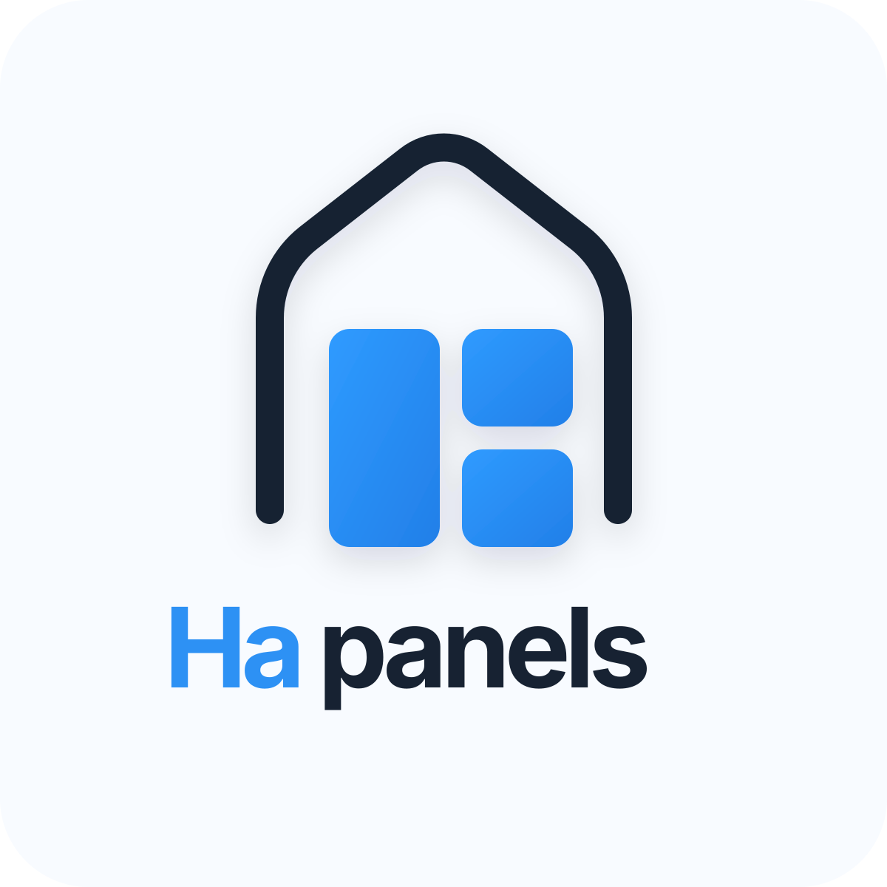

Hapanels
Natywny panel Home Assistant dla Shelly Wall Display i tabletów z Androidem. Bez WebView jako głównego interfejsu: Compose UI, realne sterowanie sprzętem i MQTT discovery dla Home Assistant.
Aktualny fokus
Shelly buttons, relay, proximity presence, auto-brightness, AOD/screensaver i dashboard panelowy.
Dla kogo
Shelly Wall Display najpierw, większe tablety Android jako fallback.
OAuth redirect
r1ha://auth-callback
Co jest w środku
Natywne UI
Android + Compose zamiast Lovelace WebView jako podstawowego runtime.
Sprzęt panelu
Relay, brightness, ambient light, buttony i binary proximity presence, gdy urządzenie realnie je udostępnia.
Home Assistant
REST, WebSocket, service calls i MQTT discovery/state/command topics.